항공기체정비기능사 (2004-02-01 기출문제)
1과목: 비행원리
1. 압력을 표시하는 단위에 속하지 않는 것은?
- N/m2
- ㎜Hg
- mmAq
- 1b-in
(정답률: 72%)

2. 그림에서 비행기의 상승각 θ=60° 로 등속도 상승 비행할 때 비행기의 무게가 5000㎏, 추력이 8000㎏이면 날개에 작용하는 양력 L은 몇 ㎏ 인가?
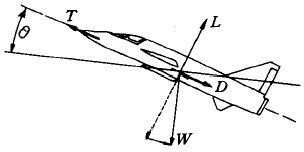
- 4000
- 2500
- 4000√3
- 2500√3
(정답률: 55%)
3. 공기흐름중에서 평판을 놓았을 때 평판에 작용하는 공기력은 어떤 값에 비례하는가? (단, ρ : 공기밀도, V : 공기의 흐름속도, S : 평판의 면적)
- ρ V
- ρ VS
- 1/2 ρVS
- ρV2S
(정답률: 66%)
4. 비행기 조종날개 중 스포일러(spoiler)의 기능은?
- 플랩을 보조하는 기능
- 도움날개를 보조하는 기능
- 승강타를 보조하는 기능
- 방향타를 보조하는 기능
(정답률: 82%)
5. 비행기의 제동유효마력이 70HP이고 프로펠러의 효율이 0.8일때 이 비행기의 이용마력은 몇 HP 인가?
- 28
- 56
- 70
- 87.5
(정답률: 87%)
6. 항력에 관한 설명으로 가장 관계가 먼 것은?
- 압력항력과 점성항력을 합쳐서 형상항력이라 한다.
- 양력에 관계하지 않고 비행을 방해하는 모든 항력을 유해항력이라 한다.
- 형상항력은 물체의 모양에 따라 달라진다.
- 유해항력이 클수록 비행기의 성능이 좋아진다.
(정답률: 78%)
7. 비행기의 턱 언더(Tuck under)현상을 방지해 주는 장치를 무엇이라 하는가?
- 마하 트리머(Mach trimmer)
- 요 댐퍼(Yow damper)
- 드래그 슈트(Drag shute)
- 오버행 밸런스(Overhang balance)
(정답률: 63%)
8. 헬리콥터 회전날개 허브에 요구되는 특징들에 속하지 않는 것은?
- 가벼운 무게
- 적은 비용
- 정비의 용이성
- 많은 부품수
(정답률: 74%)
9. 뒤 젖힘각 θ를 갖는 뒤젖힘 날개에서 진행 방향의 오른쪽 날개 유효 속도성분은 비행속도 V와 어떤 관계를 갖는가?
- Vsinθ
- Vcosθ
- Vsecθ
- Vtanθ
(정답률: 52%)
10. 무게가 2000㎏인 비행기가 30° 로 상승할 때 이 비행기의 항력이 500㎏ 작용한다면 필요추력은? (단, sin 30° = 0.5 이다.)
- 1500㎏
- 1566㎏
- 1732㎏
- 1914㎏
(정답률: 42%)
11. 어떤 항공기가 특정한 고도를 비행하고 있는 경우, 최소 비행 속도를 실현시킬 수 있는 방법은 어떤 것인가? (단, 항공기 중량 W, 날개면적 S, 밀도는 ρ 확정되어 있음)
- CD를 최대
- CD를 최소
- CL를 최대
- CL를 최소
(정답률: 44%)
12. 수직꼬리 날개가 실속하는 큰 옆미끄럼각에서도 방향안정을 유지하는 효과를 얻을 수 있도록 설치한 것은?
- 도살핀(Dorsal fin)
- 슬랫(Slat)
- 슬롯(Slot)
- 스트립(Strip)
(정답률: 90%)
13. 헬리콥터의 주회전 날개의 회전면과 진행방향이 이루는 각을 무엇이라 하는가?
- 원추각
- 코닝각
- 받음각
- 피치각
(정답률: 42%)
14. 비행기의 세로안정을 좋게하기 위한 방법이 아닌 것은?
- 공기역학적 중심이 무게 중심보다 앞에 놓이게 한다.
- 날개를 무게중심보다 높게 한다.
- 꼬리 날개 면적을 크게 한다.
- 꼬리날개 효율의 값을 크게 한다.
(정답률: 46%)
15. 대기권의 온도는 그 층에 따라 변화 특성이 다르다. 대류권에서의 기온변화 특성으로 가장 올바른 것은?
- 고도가 높아짐에 따라 기온은 대체로 일정한 비율로 감소한다.
- 고도가 높아짐에 따라 기온은 고도의 제곱에 비례하여 낮아진다.
- 극 지방에서는 고도가 높아짐에 따라 기온이 높아진다.
- 고도에 관계 없이 일정하다.
(정답률: 72%)
16. 정비에 대한 기술정보를 기록한 교범이 아닌 것은?
- 비행 교범
- 오버홀 교범
- 전기 배선도 교범
- 검사 지침서
(정답률: 66%)
17. 항공기의 정비사항중 대수리작업에 해당되지 않는 것은?
- 예비품 검사대상 부품의 오버홀
- 기체의 일부 또는 전체의 오버홀
- 내부 부품의 복잡한 분해작업
- 기관이나 장비의 그 성능이나 구조의 변경
(정답률: 58%)
18. 리벳트할 판두께를 T라 할 때 사용하여야 할 리벳트의 직경은 3T이며, 그 그립프(Grip)의 길이를 G라고 할 경우 일반적으로 머리성형을 하기 위한 가장 알맞은 돌출길이는? (단, D:리벳트 직경)
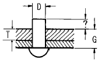
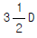
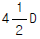
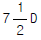
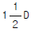
(정답률: 47%)
19. AN 4 5 - 6 볼트(bolt)를 가장 올바르게 설명한 것은? (단, in은 인치를 나타낸다.)
- 미 공,해군 표준으로서 지름은 5/16 in, 길이는 6/8 in
- 미 국립항공 기준으로서 지름은 5/16 in, 길이는 6/8 in
- 미 군사항공기준으로서 지름은 5/8 in, 길이는 6/18 in
- 미 공,해군 표준으로서 지름은 5/8 in, 길이는 6/16 in
(정답률: 47%)
20. 기관 부품의 세척방법 중 블라스트 세척작업에 관한 설명으로 가장 적합한 것은?
- 작업방법은 증기, 건식, 습식 등 3가지가 주로 이용된다.
- 정확한 치수가 필요한 부품에는 적용해서는 안된다.
- 블라스트 세척에 사용되는 연마제로는 물에 잘 희석되는 화공약품을 사용한다.
- 블라스트 세척에서 슬러리 탱크는 사용되지 않는다.
(정답률: 53%)
2과목: 항공기정비
21. 국부적으로 색깔이 변했거나 심한 경우 재료가 떨어져 나간 형태로 과열에 의해 손상되는 상태는?
- 구부러짐(bow)
- 마손(burr)
- 균열(crack)
- 소손(burning)
(정답률: 77%)
22. 수세성 형광침투 검사에서 유제(Emulsifier)의 기능은?
- 허위 결함지시를 제거하여 준다.
- 침투제를 물로 세척할 수 있게 해준다.
- 현상제의 흡입작용을 도와준다.
- 침투제의 침투능력을 증대시켜 준다.
(정답률: 45%)
23. 격납고 내의 항공기에 배유작업이나 정비작업중의 접지(ground)사항으로 가장 올바른 것은?
- 항공기 자체와 연료차, 항공기 자체와 지면, 연료차와 지면에 접지한다.
- 전기 스위치에나 공작물에 접지 한다.
- 항공기 자체 접지선이 되어 있으므로 이중으로 접지 할 필요가 없다.
- 전기기기나 스위치를 off하면 작업중 접지가 필요없다.
(정답률: 85%)
24. 윤활유, 연료등에 의해 발생하는 화재는?
- A급
- B급
- C급
- D급
(정답률: 85%)
25. 귀마개는 무엇으로 세척하는 것이 가장 좋은가?
- 비눗물
- 알콜
- 솔벤트
- 화학세제
(정답률: 77%)
26. 다음의 영문 물음에 가장 올바른 것은?
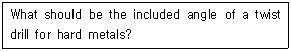
- 118°
- 90°
- 65°
- 45°
(정답률: 56%)
27. 밑줄친 부분을 의미하는 올바른 단어는?
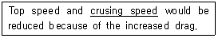
- 최고속도
- 상승속도
- 순항속도
- 경제속도
(정답률: 83%)
28. 측정기기를 가지고 어떤 물체를 측정시 측정하는 사람에 따라 발생하는 오차를 무엇이라 하는가?(오류 신고가 접수된 문제입니다. 반드시 정답과 해설을 확인하시기 바랍니다.)
- 온도 오차
- 측정기 오차
- 우연 오차
- 측정 오차
(정답률: 86%)
29. 측정기기의 구조에 따른 분류에 의해 아메스형과 칼마형으로 분류되는 측정기기는?
- 버니어 캘리퍼스
- 텔레스코핑 게이지
- 두께 게이지
- 실린더 게이지
(정답률: 40%)
30. 볼트나 너트의 육면 중 2면만이 공구의 개구부분에 걸려서 그 볼트나 너트를 장착하는데 쓰이는 공구는?
- 박스 렌치
- 오픈엔드 렌치
- 조합 렌치
- 소켓 렌치
(정답률: 67%)
31. 불안전한 행위로 발생되는 사고와 관계 없는 것은?
- 지시상의 결함
- 신체적, 정신적 부적합
- 규칙, 절차 무시
- 작업상태의 불량
(정답률: 25%)
32. 최신형 항공기 조종계통의 비상 작동을 위한 동력 공급원으로 이용하기 위한 고압가스는 무엇인가?
- 수소
- 산소
- 히드라진
- 할로겐
(정답률: 73%)
33. 다음에서 성능허용한계, 마멸한계 및 부식한계 등을 가지는 장비나 부품에 활용하는 정비방식은?
- 시한성 정비
- 상태 정비
- 공장 정비
- 운항 정비
(정답률: 48%)
34. 기체 판금작업에서 두께가 0.06 in인 금속판재를 굽힘 반지름 0.135 in로 하여 90° 로 굽힐 때 세트백(S.B)은 얼마인가?
- 0.195 in
- 0.125 in
- 0.⑤1 in
- 0.017 in
(정답률: 56%)
35. 항공기 유관(호스)식별용 표찰에 "TOXIC" 이라는 문자가 새겨져 있을 때, 이 유관에는 어떤 물질이 통과하는가?
- 연료
- 유독 물질
- 산소
- 프레온 가스
(정답률: 65%)
36. 조종케이블이 작동중 마찰에 의해 손상되는 것을 방지하며 케이블을 3도 이내의 범위에서 방향을 유도하는 부품의 명칭은 ?
- 풀리(Pulley)
- 압력 실(Pressure seal)
- 페어 리드(Fair lead)
- 토크 튜브(Torque tube)
(정답률: 47%)
37. 항공기 기체의 구성으로 가장 올바른 것은?
- 날개, 착륙장치, 동체, 꼬리날개부, 동력장치로 구성 되어있다.
- 날개, 동체, 꼬리날개부, 착륙장치, 엔진장착부 등으로 구성 되어있다.
- 날개, 동체, 꼬리날개부, 착륙장치, 각종장비 계통으로 구성되어 있다.
- 동체, 날개, 동력장치, 장비장치 등으로 구성되어 있다.
(정답률: 52%)
38. 왕복엔진을 장착한 경비행기에서 엔진 마운트(engine mount)는 주로 어느 재질로 만들어지는가?
- 속이 비지 않은 강철
- 관으로 된 강철(tubular steel)
- 관으로 된 알루미늄(tubular aluminum)
- 속이 찬 마그네슘 합금
(정답률: 43%)
39. 알크래드 알루미늄(ALCLAD ALUMINUM)을 가장 올바르게 설명한 것은?
- 아연으로서 양면을 약 5.5% 정도의 깊이층으로 입힌 것이다.
- 아연으로서 양면을 약 1% 정도의 깊이층으로 입힌 것이다.
- 순수 알루미늄으로서 약 1% 정도의 깊이층으로 양면을 입힌 것이다.
- 순수 알루미늄으로서 재료의 양면을 약 5.5% 정도의 깊이층으로 입힌 것이다.
(정답률: 57%)
40. 항공기의 총 모멘트가 125,200㎏f· ㎝이고 총 무게가 500㎏f일 때, 이 항공기의 중심위치는 어디에 있는가?
- 210.4㎝
- 230.4㎝
- 250.4㎝
- 270.4㎝
(정답률: 60%)
3과목: 항공기체
41. 지름 2㎝인 원형 단면봉에 3,000㎏f의 인장하중이 작용할 때 단면에서의 응력은 몇 ㎏f/㎝2 인가?
- 477.5
- 750
- 954.9
- 1909.8
(정답률: 45%)
42. 헬리콥터의 회전날개중 허브에 플래핑힌지와 페더링힌지는 가지고 있으나 항력힌지가 없는 형식의 회전날개는?
- 관절형 회전날개
- 반고정형 회전날개
- 고정식 회전날개
- 베어링리스 회전날개
(정답률: 57%)
43. 초기의 헬리콥터 형식으로 많이 만들어졌으며 비교적 높은 강도를 가지고 있고 정비가 용이하나 유효공간이 적고 정밀한 제작이 어려운 구조형식은?
- 모노코크형
- 세미모노코크형
- 트러스형
- 박스형
(정답률: 72%)
44. 여유에너지 흡수낙하시험에 대한 설명 중 가장 올바른 것은?
- 제한하강률의 1.2배에 해당하는 하강률로 낙하할 때 착륙장치의 에너지흡수 능력의 여유가 얼마인가를 확인한다.
- 여유에너지 흡수낙하시험시는 구조의 어느 부분이라도 항복점에 이르러서는 안되며 파괴가 일어나지 않아야 한다.
- 헬리콥터에서의 여유에너지 흡수낙하시험시는 고정 날개 항공기의 자유낙하시험에서의 높이의 3배 되는 곳에서 한다.
- 완전한 기체로서 낙하시험을 하는 경우는 양력장치를 장탈한 후 자동투하 하여 반력계로부터 접지할 때의 반력을 측정한다.
(정답률: 35%)
45. 지름이 8㎝이고, 길이가 200㎝인 기둥의 세장비를 구하면 얼마인가?
- 50
- 100
- 150
- 200
(정답률: 50%)
46. 보의 휨응력 계산시 단면계수(Z)가 적용된다. 단면의 직경이 d 인 원의 단면계수(Z)값은?
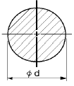
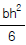
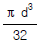
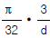
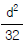
(정답률: 60%)
47. 프라스틱 가운데 투명도가 가장 높으며, 광학적 성질이 우수하여 항공기용 창문유리로 사용되는 재료는?
- 에폭시수지
- 폴리염화비닐
- 폴리메틸메타크릴레이트
- 페놀수지
(정답률: 62%)
48. 현대 대형항공기에 주로 널리 사용되는 브레이크 장치의 구조 형식은?
- 팽창 튜브식
- 싱글 디스크식
- 더블 디스크식
- 멀티 디스크식
(정답률: 71%)
49. 안티스키드 장치의 구성품이 아닌 것은?
- 휠 스피드 센서
- R.P.M
- 컨트롤 박스
- 컨트롤 밸브
(정답률: 69%)
50. 캔틸레버식 날개(Cantilever Type Wing)에 대한 설명 중 가장 올바른 것은?
- 지지보(Strut)대신에 장선(Bracing Wire)이 있다.
- 조절할 수 없는 지지보(Strut)가 있다.
- 외부 지지보(Strut)가 필요 없다.
- 좌우에 각각 한개씩의 지지보가 있다.
(정답률: 36%)
51. 마그네슘 합금의 미세한 분말이 발화 했을 때 소화하는 방법으로 가장 올바른 것은?
- 물을 사용하여 소화한다.
- 산소가스를 사용하여 소화한다.
- 마른 모래를 뿌려 소화한다.
- 헝겁을 이용하여 소화한다.
(정답률: 75%)
52. 합금강의 식별표시에 있어서 몰리브덴강의 표시는?
- 1XXX
- 2XXX
- 3XXX
- 4XXX
(정답률: 41%)
53. 지상진동시험에 대한 설명 중 가장 거리가 먼 것은?
- 진동할 때 변위의 폭을 진폭이라 한다.
- 구조재료와 같은 탄성 재료는 외부의 하중과는 상관없이 고유한 진동수를 가지고 있다.
- 진폭의 최대값과 최소값이 교대로 한 번씩 나타나는 구간을 1사이클(cycle)이라 한다.
- 외부 하중의 진동수가 고유 진동수보다 클 때를 공진이라 한다.
(정답률: 51%)
54. 헬리콥터에서 파일론(PYLON)의 역할은?
- 꼬리회전날개 장착 지지대
- 수평 안정판
- 방향타(Rudder)의 지지대
- 꼬리회전날개에 동력을 전달
(정답률: 55%)
55. 금속의 표면만을 경화시킬 목적으로 수행하는 표면경화법의 종류에 해당되는 것은?
- 불림
- 침탄
- 뜨임질
- 연화
(정답률: 57%)
56. 헬리콥터에 발생하는 횡진동과 가장 관계가 깊은 것은?
- 궤도
- 깃의 평형
- 회전면
- 리드래그
(정답률: 42%)
57. 항공기의 동체구조 중 1차 구조 부재는?
- SPAR
- FAIRING
- STRINGER
- COVER
(정답률: 48%)
58. ALCOA규격의 2S는 주합금 원소가 무엇인가?
- 망간(Mn)
- 구리(Cu)
- 순수알루미늄
- 규소(Si)
(정답률: 47%)
59. 속도-하중배수 선도에 나타나는 속도 중에서 가장 속도가 빠른 것은?
- 설계 급강하 속도
- 설계 순항 속도
- 설계 운용 속도
- 실속 속도
(정답률: 80%)
60. 다음의 내용은 누구의 법칙인가?
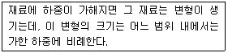
- 키르히호프
- 훅크
- 파스칼
- 레이놀즈
(정답률: 60%)